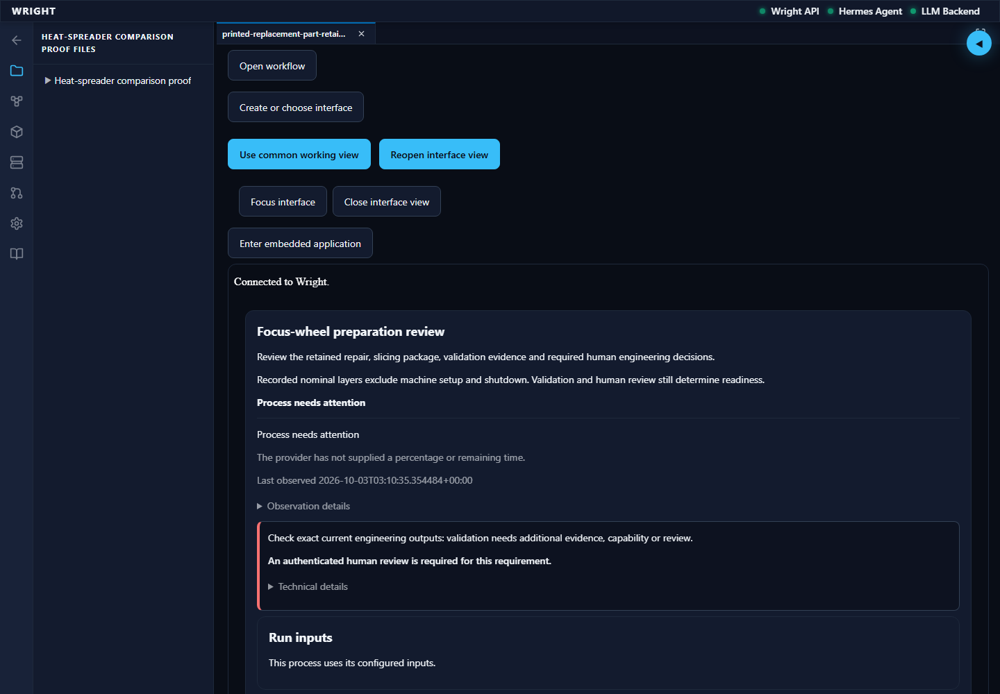
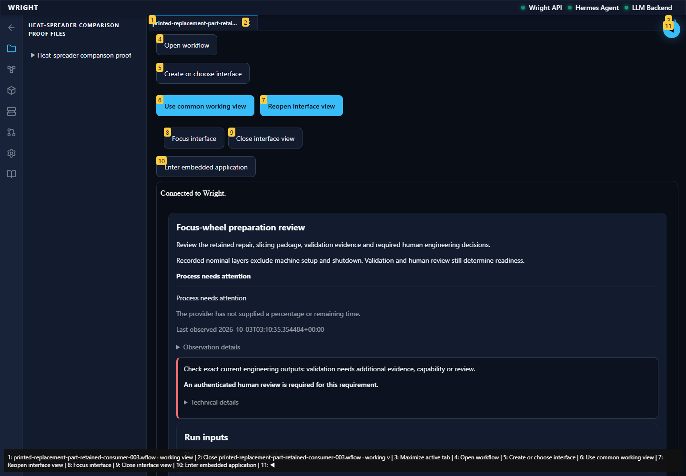
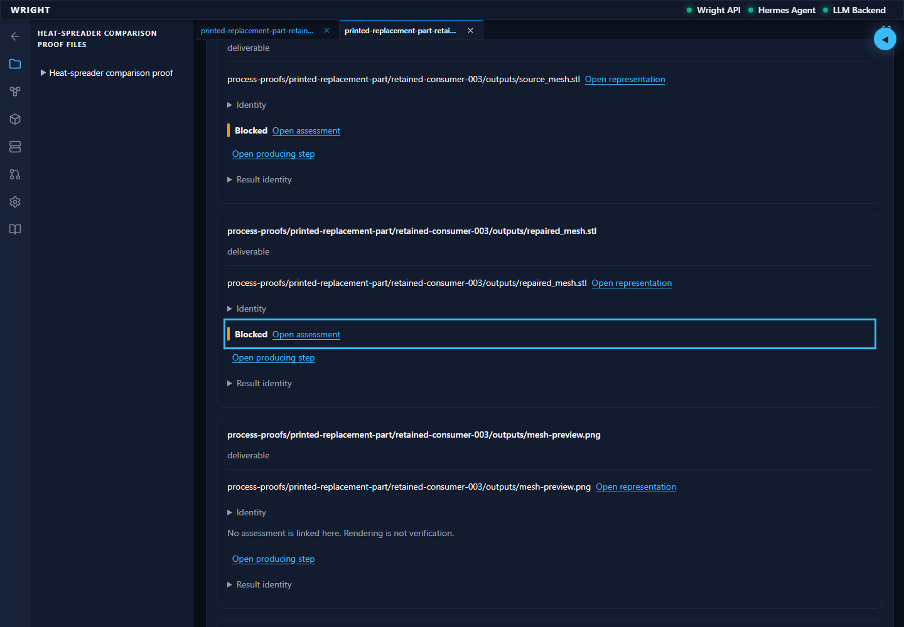
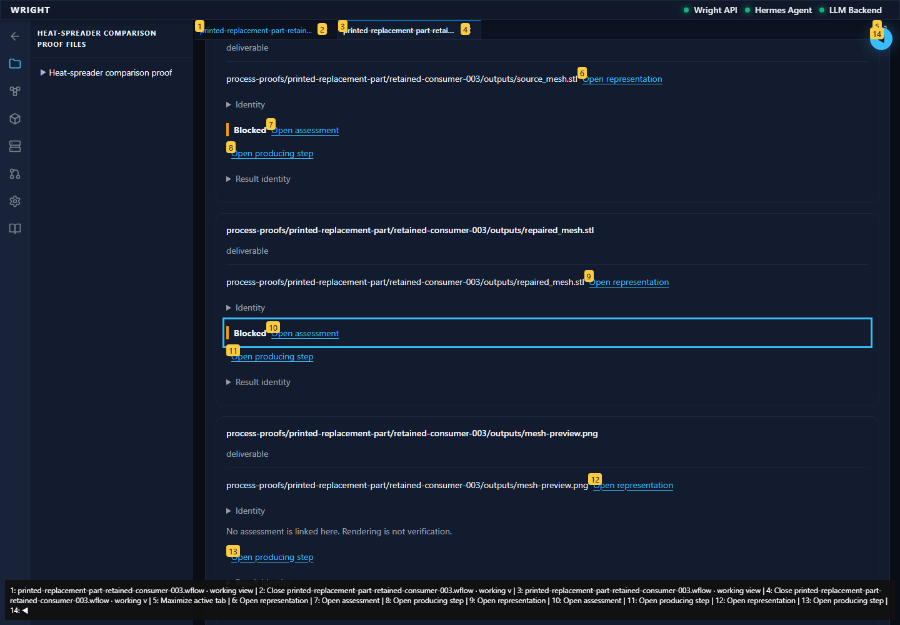
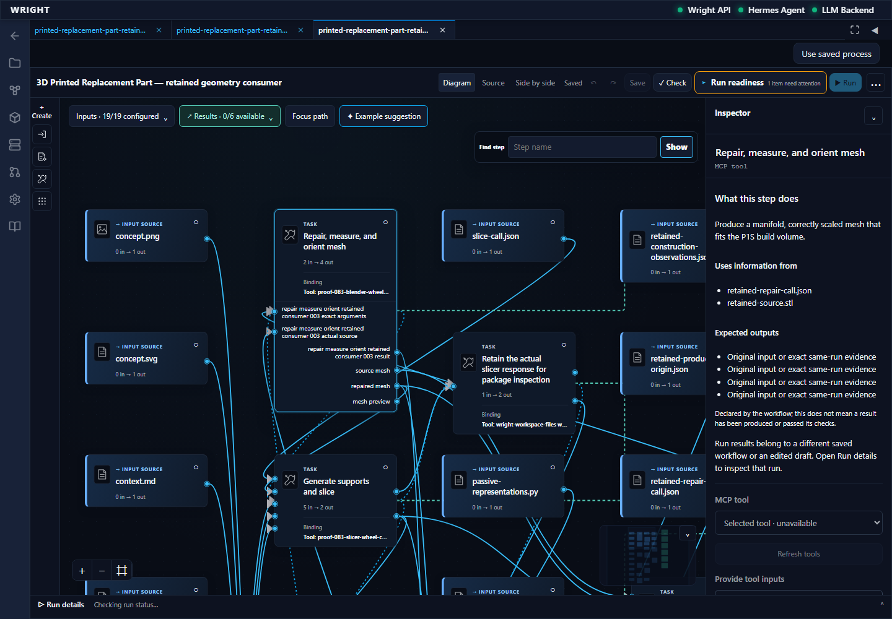
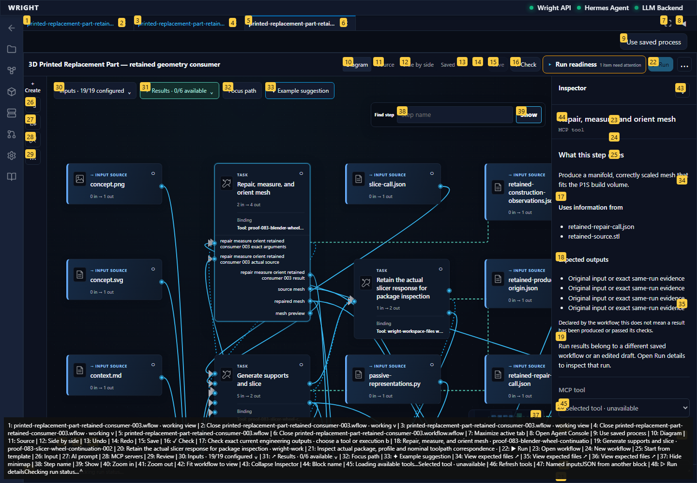

A focused continuation of the verified normal-workspace journey on the same actual isolated run. No engineering decisions or physical actions.
Status: pass
The saved interface reads the original results and held assessment.
Expected: Nineteen results and exact repaired-mesh navigation in a working context.
Actual: Actual working context and both scoped navigation controls available.
raw 
annotated 
The saved interface opens the original eighteen-check assessment in Wright’s common evidence view.
Expected: Seventeen passes, one blocked human review, exact repaired-mesh result focus.
Actual: Full held assessment opened with exact result focus; no review response submitted.
raw 
annotated 
The working interface returns to the accepted repair step and its inspector.
Expected: Exact accepted repair block selected with inspector and no stale-source warning.
Actual: Exact repair block selected in the established editor; accepted source and run remain unchanged.
raw 
annotated 